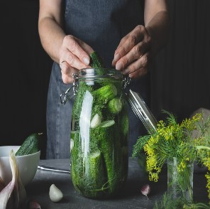

The safe methods of canning food at home are boiling water bath canning, atmospheric steam canning, and pressure canning. Whether a food is high acid or low acid indicates what type of processing method should be used. Generally, high-acid foods can be safely canned in a water bath or atmospheric steam canner. Low-acid foods must be processed in a pressure canner.10.0
Low Acid Foods
Low-acid foods include meats and vegetables (except for acidified tomatoes and pickled products). Low-acid foods lack the acidity needed to inhibit the growth of bacteria and spores that can survive the temperature of boiling water (212°F). The bacterium of greatest concern in home canning is Clostridium botulinum because it can produce spores that generate a dangerous toxin that causes food poisoning.
High Acid Foods
Most fruits have naturally high levels of acid. While tomatoes have some natural acids, they are borderline between high and low acid and need bottled lemon juice, citric acid, or vinegar (labeled 5 percent acidity) to increase their acidity for safe food processing. Fermented foods, such as sauerkraut, and foods to which a sufficient amount of vinegar is added, as in pickled vegetables, are also canned as high-acid foods. Jams and jellies are high-acid foods unless low-acid vegetables, such as peppers, are added.
Canning Procedures
Selecting Jars and Lids
Mason jars are recommended for home canning. Commercial single-use jars are less likely to seal and may break, especially in a pressure canner. Lids may not fit single-use jars. Canning jars come in a variety of sizes. Most recipes have been developed for pint and quart jars. If processing times are not specified for smaller jars, process them the same as the next larger size that is specified. Half-gallon jars are recommended only for canning apple and grape juices. If properly used, jars may be reused. Recipes have been research tested using standard Mason jars. Many specialty shops sell novelty jars in different sizes and shapes. Unusual jar shapes may not work with process times and temperatures given in the "Let's Preserve" fact sheets. The recommended lid consists of a flat metal disk that has a sealing compound around the outer edge and a separate metal screw band. The lid should not be reused; the bands may be reused as long as they don't rust. Never reuse lids from commercially canned foods for home food preservation. Zinc lids or bail-type jars with rubber rings are no longer recommended for home canning.
Hot Pack or Raw Pack
When foods are raw packed the jars are filled with freshly prepared, unheated food. Raw-packed foods will often float in the jars, and the air trapped in and around the food may cause discoloration within 2 to 3 months of storage. Hot packing involves heating freshly prepared food to boiling, simmering it briefly, and promptly filling the jars loosely with the boiled food and liquid. Hot packing helps remove air from inside the food tissues, shrinks the food, and helps keep the food from floating in the jars. Preshrinking that occurs in hot packing allows more food to fit into each jar.
Atmospheric Steam Canning Procedures
Follow all the practices listed under "General Canning Guidelines" above. Fill the base of the canner with the amount of water indicated in the instruction manual of the canner (usually 2 quarts). Set rack in the base of the canner. Heat water in the base of the canner to 140°F for raw-packed foods or 180°F for hot-packed foods. Place jars on rack in canner. When all the jars have been placed in the canner, place the cover or lid on the canner. Bring to boil over medium to medium-high heat until a steady column of steam at least 6 inches long escapes from the vent hole(s). Start processing time. Slowly adjust the heat to maintain a steady column of steam. After processing, turn off heat and remove the canner cover or lid. Allow jars to sit in the canner for 5 minutes before removing from the canner; this will reduce siphoning (loss of liquid from the jar).
Pressure Canning Procedures
Follow all the practices listed under "General Canning Guidelines" above. Put 2 to 3 inches of water in the bottom of the pressure canner. Place filled jars on a rack at bottom of the canner Heat to boiling to exhaust steam from the canner for 10 minutes before adding the weight or closing the petcock. Add weight or pressure regulator. Allow pressure to rise and maintain at level called for in the tested recipe by adjusting the heat. If pressure goes below recommended pressure at any time during processing, reset your timer to zero and restart the process time. After processing, remove canner from heat and allow canner to cool naturally to 0 pounds pressure. Wait 2 minutes and remove weighted gauge or pressure regulator. Wait 10 more minutes before removing lid--this will reduce siphoning (loss of liquid from the jar).
Storing Canned Goods
Remove screw bands from jars and wash jars before storing. Properly sealed jars do not need the bands on to hold the lids in place. Screw bands can rust if left on the jars in storage, causing the seals to break. Label with contents, date, and lot number if you canned several canner loads that day. Store in a cool, dry place; 50 to 70°F is an ideal temperature for storing canned goods. Store in a dark place. Place cooled jars in boxes if closed cupboards are not available.
Preventing Spoilage
- Use top-quality produce that is free of disease and mold
- Discard overripe produce
- Use proper canning methods and equipment.
- Sterilize jars that will be processed less than 10 minutes.
- Use clean equipment and work surfaces.
- Acidify tomatoes.
- Adjust time and pressure for higher altitudes.


Aaron
Mar 08, 2021 16:20 pmAmazing Content...Very much helpful for the canning process..
ReplyHelen Doe
Apr 08, 2021 13:20 pmThanks for sharing...Learnt something new..
ReplyDiego
Sep 08, 2021 16:40 pmThanks for sharing this wonderful needed article..Helpful!!
Reply